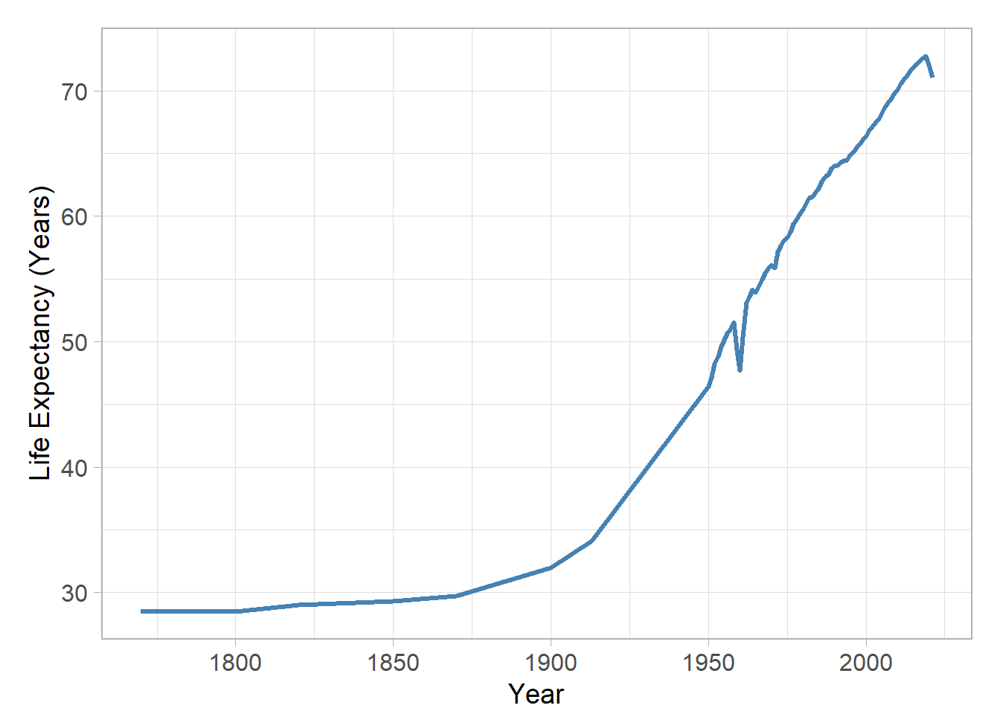
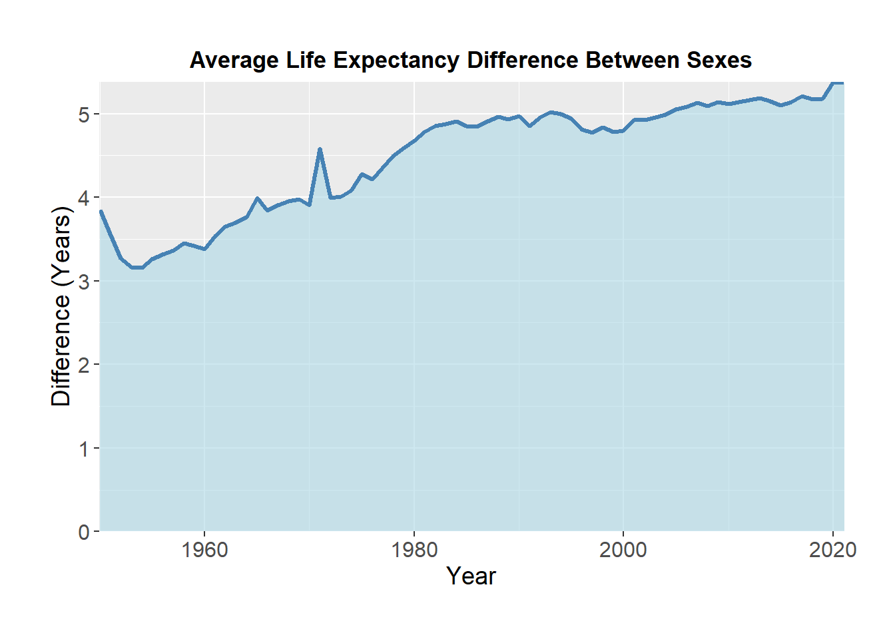
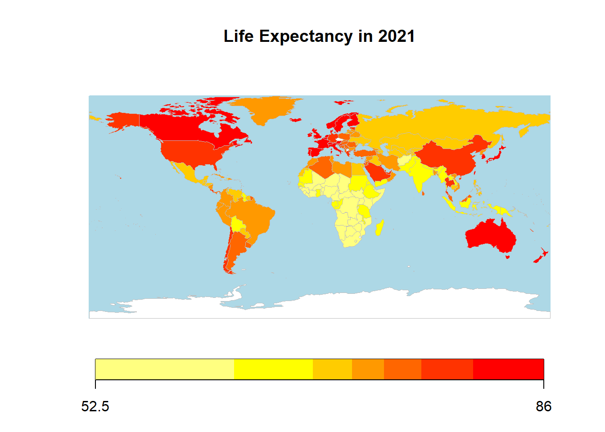

| Variable | Description |
|---|---|
| Entity | Country or region entity |
| Code | Entity code |
| Year | Year |
| LifeExpectancy | Period life expectancy at birth - Sex: all - Age: 0 |
| LifeExpectancyDiffFM | LifeExpectancyDiffFM: The difference in life expectancy between men and women (measured in years). |
Problem Description
Why are people living so much longer now? A hundred years ago, the average lifespan was 40 years, and now it’s over 70. This blog explores the reasons behind this rise. We’ll also look at how men and women are experiencing this trend differently and how various regions of the world compare.
Introduction
Life expectancy is a crucial issue in assessing global development and health. Over the past century, factors such as advancements in medical care, improvements in public health, and reductions in conflict have significantly impacted life expectancy. Understanding these changes can aid in adapting future policies and improving living conditions. This report will analyze changes in life expectancy over the past hundred years, differences between genders, and variations in life expectancy across different continents.
Data Description
To get a clearer picture, I used data from TidyTuesday’s repository (2023-12-05). The dataset contains life expectancy information across different countries and time periods, sourced from “Our World in Data.”. This dataset provides information on life expectancy trends across various countries and regions over time. It includes key variables such as average life expectancy at birth and the gender gap in life expectancy, showing how long people are expected to live and how these patterns differ between men and women. The data is described in the Table 1 below.
Data Cleaning Steps:
Here are the three steps I used to clean up the data, following the methods provided by TidyTuesday:
- Filtered the data to include only records from 1900 onwards, ensuring the analysis focuses on the most relevant time period.
- Removed countries with missing life expectancy values to ensure accuracy and consistency in the analysis.
- Renamed key columns (e.g., renaming the life expectancy column) to make the dataset easier to interpret and work with in subsequent analysis.
# Code to load and clean data
life_expectancy <- readr::read_csv('https://raw.githubusercontent.com/rfordatascience/tidytuesday/master/data/2023/2023-12-05/life_expectancy.csv')
colnames(life_expectancy)[4] <- "LifeExpectancy"
life_expectancy_female_male <-
readr::read_csv('https://raw.githubusercontent.com/rfordatascience/tidytuesday/master/data/2023/2023-12-05/life_expectancy_female_male.csv')
colnames(life_expectancy_female_male)[4] <- "LifeExpectancyDiffFM"1. Life Expectancy Has Skyrocketed in the Last Century
Take a look at Figure 1. It shows how life expectancy has shot up from about 40 years in 1900 to over 70 years in 2021. This massive improvement is mostly thanks to better healthcare, higher living standards, and fewer wars. Sure, there were some dips—like during World War II—but overall, the trend has been upward. It’s amazing to see how far we’ve come in just a hundred years!

2. Women Outlive Men
It’s no secret that women tend to live longer than men. Figure 2 highlights the difference in life expectancy between the sexes over the last 70 years. Starting from the 1950s, women began to outlive men by a noticeable margin, and the gap peaked in the 1970s. Why? Well, it turns out men tend to take more risks—smoking, drinking, and dangerous jobs—all of which have higher health risks. Women, on the other hand, tend to engage in fewer risky behaviors and have better access to healthcare, which contributes to their longer lives (JAMA Network, 2024).

3. Big Differences Between Continents in 2021
Even though global life expectancy has risen overall, there are still some huge differences between regions. As you can see in Figure 3 , Africa has the lowest life expectancy, mainly because of healthcare challenges and high disease rates. Meanwhile, Europe leads the pack with the highest life expectancy, thanks to excellent healthcare and social services. North America also fares well, though the U.S. drags down the average a bit due to healthcare disparities. South America and Asia show steady progress but still have some gaps compared to other continents.

Conclusion
Life expectancy has increased thanks to better healthcare and living conditions. However, regions like Africa still face challenges with healthcare access. It’s crucial that future efforts focus on closing these gaps so everyone can benefit equally.
The gap between men and women is also worth noting—women generally outlive men due to a mix of biology and lifestyle. As we move forward, addressing these disparities will be key to ensuring healthier, longer lives for all.
Reference
Cutler, D. M., Deaton, A. S., & Lleras-Muney, A. (2006). The determinants of mortality. Journal of Economic Perspectives, 20(3), 97-120. https://doi.org/10.1257/jep.20.3.97
JAMA Network. (2024). Life expectancy gap grows between men and women in the US. Substance Use and Addiction Medicine. https://jamanetwork.com:contentReferenceoaicite:0.
TidyTuesday. (2023, December 5). Life expectancy dataset. GitHub. https://github.com/rfordatascience/tidytuesday/blob/master/data/2023/2023-12-05/readme.md
Roser, M., Ortiz-Ospina, E., & Ritchie, H. (2023). Life expectancy. Our World in Data. https://ourworldindata.org/life-expectancy?insight=there-are-wide-differences-in-life-expectancy-around-the-world#key-insights